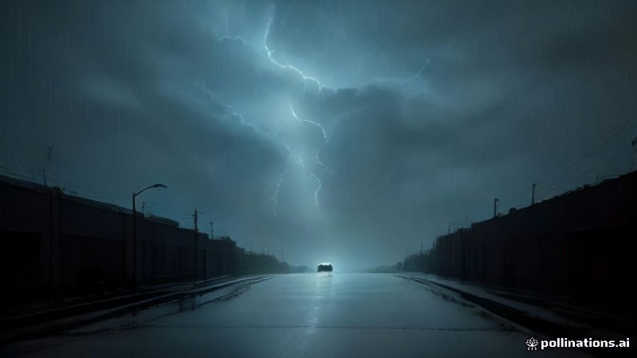

বিপর্যয়কর ঝড়ে মেসির থ্যাঙ্কসগিভিং প্যারেডের প্রথম স্থগিত
DW · 2026-11-26
AI-generated illustrationএকটি বড় ঝড়ের পূর্বাভাস ইস্ট কোস্টে ভ্রমণ বিলম্ব ও মেসির থ্যাঙ্কসগিভিং প্যারেডের প্রথম স্থগিতের কারণ হয়েছে, DW রিপোর্ট করেছে।
একটি বড় ঝড় ইস্ট কোস্টে উপরের দিকে অগ্রসর হতে পূর্বাভাস দেওয়া হয়েছে, যা ভারী বৃষ্টিপাত ও শক্তিশালী বাতাস নিয়ে আসবে এবং অঞ্চল জুড়ে ভ্রমণ বিলম্বের সম্ভাবনা তৈরি করবে।
এতে, কর্তৃপক্ষের জারি করা আবহাওয়া সতর্কতা মেসির থ্যাঙ্কসগিভিং ডে প্যারেডের স্থগিতের দিকে নিয়ে যায়, যা প্যারেডের ১০০ বছরের ইতিহাসে প্রথমবারের মতো ঘটেছে, DW জানিয়েছে।
প্যারেডের এই স্থগিত দেশের প্রচলিত থ্যাঙ্কসগিভিং উদযাপনের সূচনা প্রভাবিত করবে, কারণ এটি বহু দর্শক ও অংশগ্রহণকারীর জন্য কেন্দ্রীয় অনুষ্ঠান।
Read the original reporting at the links above.
English version
Storm forces first postponement of Macy's Thanksgiving Parade
A major storm is forecast to move up the U.S. East Coast, bringing heavy rain and strong winds that are expected to cause travel delays and disruptions across the region.
In response, authorities issued weather warnings that led to the postponement of the Macy's Thanksgiving Day Parade, the first such delay in the parade's 100‑year history, DW reported.
The postponement affects the traditional start of Thanksgiving celebrations, as the parade is a central event for many viewers and participants nationwide.